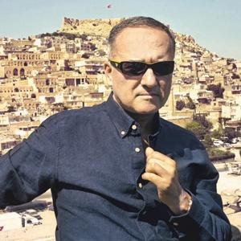

Ben ve Mardin
21 Nisan 1955’te İstanbul’da doğmuşum. İstanbul’da doğmama rağmen çocukluğum ve gençliğim Mardin’de geçti. 1955’te başlayan Mardin maceram benim 1972’de üniversite eğitimim için Ankara’ya taşınmamla son buldu. Mardin’deki 17 senelik süreç benim karakterimi ve özelliklerimi doğrudan etkiledi. Lise hayatım boyunca Mardin’den uzaklaşmaya dair bir isteğim vardı, Türkiye’nin merkezi olan İstanbul’da yaşamak istiyordum. Mardin’de yaşamış olduğum tecrübelerden, oradaki bölgenin ve insanların getirdiği zorluklardan uzaklaşmak istiyordum. 1972’de oradan ayrıldıktan sonra yıllar boyunca dönmedim Mardin’e. İstanbul’daki hayatımdan zevk alıyor olsam da Mardin’e olan bu kızgınlığım zamanla azaldı ve yerini sevgi aldı. Ziyaret amaçlı sık sık gider oldum, kimi zaman çocukluk anılarımı hatırladım, kimi zaman da büyüdüğüm şehrin halini gördükçe ağlamaklı oldum. Genel olarak Mardin’le inişli çıkışlı bir ilişkimiz vardı ama bu hiçbir zaman benim Mardin’e olan sevgimi azalmadı. Ne de olsa, beni ben yapan şehir oydu.